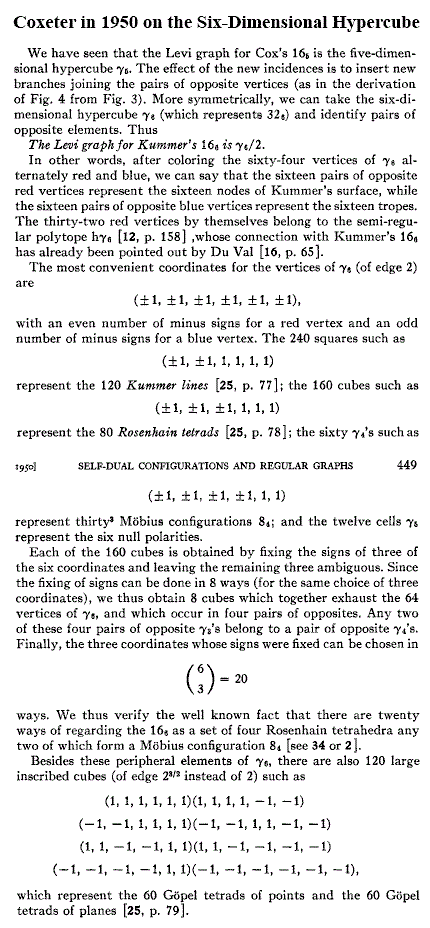

| Finite
Geometry
Notes
|
The Ninth* Configuration
The ninth in a list of configurations—
"There
is a (2d-1)d
configuration
known as the Cox configuration."
— MathWorld article on "Configuration"
For
futher details on the Cox 326 configuration's
Levi graph,
isomorphic to the six-dimensional hypercube γ6
, see
Coxeter, "Self-Dual
Configurations and Regular Graphs,"
Bull. Amer. Math. Soc. Vol. 56, pages
413-455, 1950.
This contains a discussion of Kummer's 166 as it
relates to γ6 ,
another form of the 4×4×4 Galois cube.

See also Solomon's Cube.
*
Title inspired by the novel of William Peter Blatty.
Note that Cox configurations are Tenth,
if the fleeting
MathWorld reference to 113
configurations is counted
as seventh— and then the
ninth would
be a 15
3 and
some related material would be Inscapes.